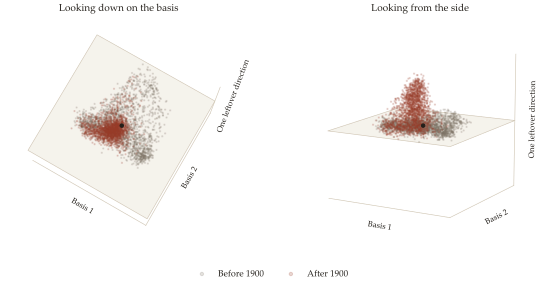
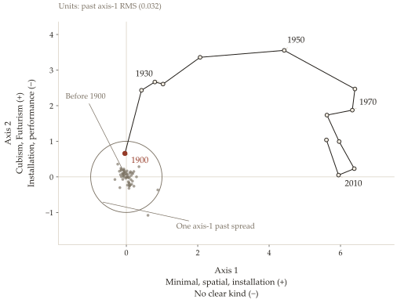
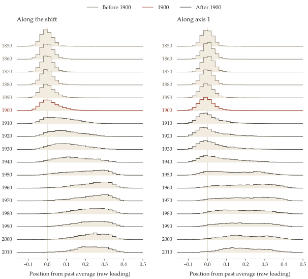

Q3 Where did later work go?
A basis from the works before 1900 misses about 9 points more of the later works than a random basis does. Is what it misses scattered in every direction, like noise, or does it point somewhere? If it points somewhere, that is the direction in which later work moved away from what came before. We look for it in CLIP, in 7 steps, and the other encoders come at the end:
- We take the basis from the works before 1900, i.e., their average and their 32 leading directions, as in Q2.1
- For each work from 1900 on, we take what that basis misses: the work minus the earlier average, minus its shadow on the 32 directions. We call it the work’s leftover.
- We average the leftovers of the later works and take the direction of that average, the shift, i.e., the way the later works lean on average.
- We also take the 2 directions along which the later works’ leftovers spread the most around that average (their first principal components, as in Q2), axis 1 and axis 2. So the shift is about the average later work, and the axes are about how single works differ from it.

- We find these directions from half of the later artists and measure them on the other half, 5 times with different halves, so a direction only counts if works by artists it never saw move along it too.
- We compare everything with a split into 2 groups of the same sizes drawn at random, i.e., a split with no time in it, the no-time split.2
- Then we follow the decades, i.e., how far each decade’s works sit along these directions.
A. In CLIP, from 1900 to the 1960s, each decade leaned further in one direction, and then held there. The leftover of the later works piles up along one direction, the shift, which holds about 30 times more of the leftover than the shift of the no-time split does. Every half of the artists we tried finds it. From the 1960s on, the decades stay at about the same distance along it (Figure 3, along the shift).3
B. In CLIP, the decades moved first where Cubism and abstraction sit, then where Minimalism and installation sit. By the 1910s the decades have moved out along axis 2, where Cubism, Futurism and abstraction sit.4 From the 1930s they move along axis 1, where Minimalism, Light and Space, Color Field, installation and sculpture sit. By 1960 they are out along it by about 6 times the earlier works’ spread (1 to 2 times in the 1920s to 1940s). The decades sit farthest out along axis 2 in the 1950s and come back after (Figure 2).5

We also notice that along the shift each decade’s works move as one hump, with no empty stretch between decades (Figure 3).6 Split at 1950, the later works lean away from their past less, and split at 2000 less still.7 The earlier works already vary a little along this direction.8
So from 1900 to the 1960s the corpus moved where the earlier works had gone only a little, and then stayed there.9

The other encoders
SigLIP and DINOv3 find a lean too, and put the later works in nearly the same order along it as CLIP. In DINOv3, though, a random walk with the data’s own spread keeps one way as well as the decades’ steps in about 1.3% of tries, against about 0.06% in SigLIP.10 Its path has no first leg along axis 2.
Where SigLIP and DINOv3 agree and differ
The shift holds 15.5% of the leftover in SigLIP and 13.3% in DINOv3, against 14.3% in CLIP, and work by work the three put the later works in nearly the same order along it.11
We also notice that the path’s steps keep pointing the same way in SigLIP as in CLIP, while in DINOv3 a random walk does as well about 20 times as often as in SigLIP. From 2000 DINOv3 finds almost no lean.12
The shift is an average over all the later works, and it does not say which single works the past describes worst. So next we ask what is left over for each work (Q4).
Footnotes
In Q2 the time gap is largest at 32 directions. With 64 or 128 the shift is still there and just as stable across splits. It holds 11.3% and 9.8% of the leftover against 14.3% at 32. The no-time split holds 0.3 to 0.4%. The leftover itself shrinks as directions are added, so its absolute size falls to under 40% by 128.↩︎
In the random split, artists sit on both sides. The real split at 1900 is nearly artist-disjoint. So the random split is a “no time” control, not a “no artist” one.↩︎
Measured on the held-out artists, the shift holds 14.3% of the leftover, against 0.5% for the no-time split. The shift’s direction agrees across the five splits: the cosine between two of them is 0.98 on average and 0.97 at the lowest. For the no-time split the average cosine is 0.06. Axis 1 holds 5.5% of the leftover (1.1% in the no-time split), counting only the spread around the average leftover, and lies close to the shift (cosine 0.78). Axis 2 holds 2.8%, counted the same way.↩︎
Axis 2’s positive end holds, for example, Picasso 1920, Valmier 1923 and Herbin 1927. Its other end holds installation and performance. Axis 1’s other end holds no clear kind. The ends are the styles and works that sit farthest along each direction on average, over all works from 1900 to 2026. So the names only say what sits there. They do not mean the works of the 1950s were Minimalist.↩︎
Within the plane of the shift and the 2 axes, the decade means move mostly along one direction, which holds 83% of their spread, and a second, which holds 12%. In the full space the first holds 78%. A random walk with the data’s own spread puts as much of its spread on one direction as the decade path does in about 0.05% of tries in CLIP, and as the 19th century’s path does in about 0.08%. So one main direction is not new. What is new after 1900 is that the steps are larger than noise, and that each step points more the way the one before did. The 19th century’s decades hold 5 to 10 times fewer works, so part of this difference comes from the larger samples. The decade of the bend changes with how the works are weighted.↩︎
We read this by eye; there is no test for an empty stretch. Along axis 1 the 1950s show two humps.↩︎
A later cutoff leaves a shorter window and fewer works, and either could explain the smaller lean. Measured from 1950 the shift holds 5.4% of the leftover, and from 2000 it holds 2.4%. With equal windows, equal numbers of works and equal pasts, the shift after 2000 holds about 4 times less than the shift after 1900.↩︎
Part of the shift lies along directions the earlier works already use a little, just outside the basis. Half of the shift’s weight sits in the earlier works’ directions 33 to 75 (of 768), and 90% by direction 296. A single random direction gives 407 and 695, which is no fair baseline. Any direction outside the basis has a small past spread by construction (a typical one about 0.017, this one 0.032), so a large multiple is partly built in. The earlier works that sit farthest along axis 1 share no style or genre more than chance. One reading is that the shift has a faint version in the earlier works. We have not tested it.↩︎
All of this is linear: a direction in the encoder’s space. It is not a claim about art history. Which recent art WikiArt holds is WikiArt’s own choice, and we do not test it. Places the earlier works never went can lie off this direction. The later works the basis from before 1900 keeps worst (graffiti, conceptual pieces) hint at such places, and finding them is the next question. The direction also lines up with kinds of images. Axis 1 is highest for installation, abstract, sculpture, figurative works and photographs. One reading is that part of it is how such works are photographed. We have not refit it without those genres.↩︎
A random walk with the data’s own spread is as one-way as the decade path in about 6 of 10,000 tries in SigLIP and about 13 of 1,000 in DINOv3. In DINOv3 the decades sit below zero along axis 2 from the 1910s to the 1950s and above it only from the 1960s. From 2000 the shift holds 0.9% of the leftover in DINOv3, against 2.4% in CLIP.↩︎
Each encoder has its own shift, so we compare the order of the works along each one. For works from 1900 on, the rank correlation between 2 encoders is 0.86 to 0.94. Over all dated works it is 0.80 to 0.91.↩︎
A random walk with the data’s own spread is as one-way as the decade path in about 6 of 10,000 tries in SigLIP and about 13 of 1,000 in DINOv3. In DINOv3 the decades sit below zero along axis 2 from the 1910s to the 1950s and above it only from the 1960s. From 2000 the shift holds 0.9% of the leftover in DINOv3, against 2.4% in CLIP.↩︎